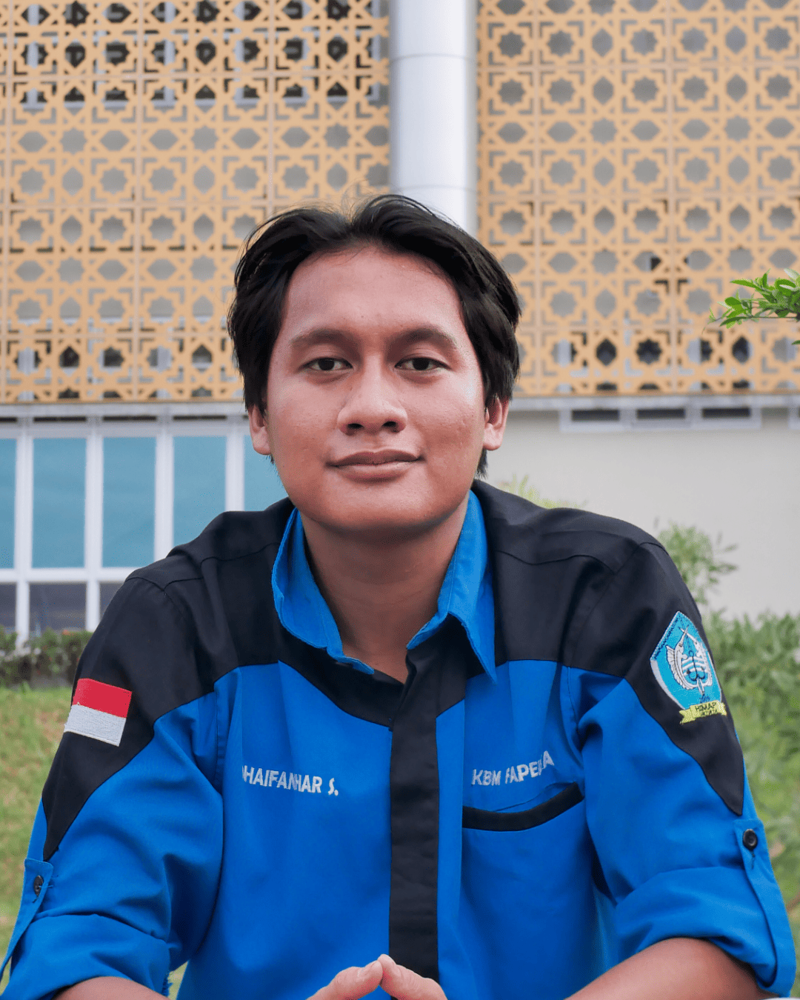

Profil Kepala Departemen

Nama Kepala Divisi
Periode 2025–2026

Dhaifan Izhar Syarafi
Periode: 2024–2025

Wahid Sirojudin
Periode: 2023–2024
Reynaldi Akmal
Periode: 2022–2023
Mimin Mintarsih
Periode: 2021–2022
Dewi Maryana
Periode: 2020–2021
Andhita Rosi Pratiwi
Periode: 2019–2020
Novita Sari Irianingrum
Periode: 2018–2019
Hanifah Fitriyani
Periode: 2017–2018
×
Nama Kepala Divisi
Jabatan: Kepala Divisi Kaderisasi
Angkatan: 2022
Periode 2025-2026
Moto:asmkdasndam